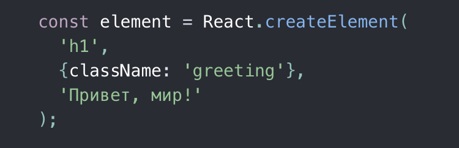
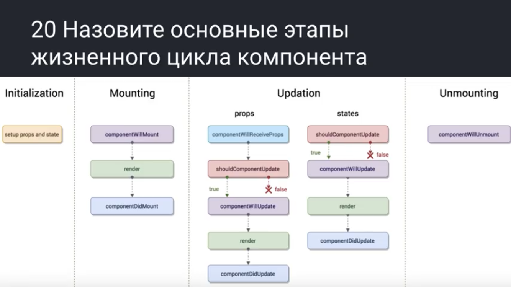

React
React - это JavaScript библиотека, для упращения разработки визуальных интерфейсов. Используется для создания одностраничных веб-приложений
Преимущества:
-
JSX - расширение JavaScript. Синтаксис который позволяет писать HTML внутри JS.
Advantages:
- Тег
- Атрибут
- Текст внутри тега

- Виртуальный DOM - виртуальное представление пользовательского интерфейса хранится в памяти и синхронизируется с настоящим DOM при помощи библиотеки ReactDOM
- SPA (Single Page Application) - это одностроничный веб-сайт или веб-приложение, которое загружается на одну HTML-страницу. Благодаря динамическому обновлению JavaScript, во время использования не нужно перезагружать или подгружать дополнительные страницы.
Components
Компоненты - (составляющая чего-либо) позволяют разделить UI на независимые, повторно используемые части и работать с каждой из них отдельно. Концептуально, компоненты похожи на JavaScript-функции. Они принимают произвольные данные (props) и возвращают React-элементы, которые описывают то, что должно появиться на экране.
- Презентационный компонента - должна быть чистой функцией ...
- Контейнерная компонента - напоминает (hoc) , оборачивает презентационную компоненту и выполняет какую-то логику (не точное определение)
- Классовая компонента — ..., преимущества local state и методы жизненного цикла (componentDidMount, componentDidUpdate...)
- Функциональная компонента — ...; потребляет меньше ресурсов чем классовая компонента.
Props
Props — это объект, аргумент функции, с которым мы можем работать внутри, но не изменять. С помощью props можно передавать данные от родителя к дочернему компоненту.
Refs
Refs — это ссылка, которая позволяет ссылаться на DOM элемент, с помощью метода React.createRefs()
BrowserRouter
- <BrowserRouter/> — это тег, который описывает, какой компонент должен отображаться, в зависимости от указанного url
- <Router/> — это один конкретный маршрут, который можно отобразить
- <NavLink/> — это тег, который создает ссылку (тег <a href=""/>) с помощью которого можно перейти на определенный Router
- <Redirect/> — перенаправляет с одной страницы на другую
- withRouter — это HOC, который добавляет в компоненту данные из URL
UI BLL
UI - это user interface(пользовательский интерфейс), использует библиотеку React
BLL — (Business logic layer; уровень бизнес логики) инкапсулирует все необходимые вычисления (всю бизнес-логику) , получает объекты из DAL (уровня доступа к данным) и передает их в UI (уровень представления), либо, наоборот, получает данные с UI (уровня представления) и передает в DAL (на уровень данных). Использует Redux
P.S. Инкапсуляция — сокрытие деталей
REDUX (state)
REDUX — это библиотека для JavaScript, предназначенная для управления состоянием приложения. Redux создаёт свой store(это объекта в котором есть методы dispatch, subscribe, getState, setState...), позволяет упростить передачу данных через контекст.
Store — это хранилище данных
State — это состояния приложения или сайта, это обычные JavaScript-объекты. State Содержит информацию, которая влияет на то, что видим после рендера
P.S. Бывает Local state и mobX
setState — указывает React, что компонент и его дочерние элементы должны быть повторно отрендерены с обновлённым состоянием. Этот метод используется для обновления интерфейса в ответ на обработчики событий и ответы сервера.
Почему нельзя изменять state напрямую?
Если мы изменим state напрямую то не будет присходит ререндеринга компоненты
...
FLUX-архитектура
FLUX-архитектура — накладывает ограничения на поток данных, в частности, исключая возможность обновления состояния компонентов самими собой. Такой подход делает поток данных предсказуемым и позволяет легче проследить причины возможных ошибок в программном обеспечении
Flux-архитектура может содержать три слоя, взаимодействующие по порядку:
- Actions (действия)
- Store (хранилище)
- Views (компоненты, конечные точки данных)
Хотя обычно между действиями и хранилищами добавляют Dispatch
Благодаря правильной архитектуре возможно оптимизации.
Компоненты которые меняются без bll и никак не взаимодействуют со state считаются неконтролируемыми
P.S. Как я понимаю FLUX-архитектуру - ничего в UI не должно меняться без BLL
Dispatch || Action || Action Creator || Subscribe
Dispatch — это метод(функция), который отправляет action (в BLL), чтобы изменить state
Action — это объект, у которого есть свойство - «type» (с названием действия, которое нужно выполнить)
Action Creator — это вспомогательная функция, которая возвращает action
Subscribe — это метод принимает функцию, которая будет вызывается каждый раз после обновления store. Он как бы «подписывает» функцию, переданную ему на обновление. К примеру следующий код при каждом обновлении (при каждом вызове dispatch()) будет выводить новое значение store в консоль.
Reducer
Редуктор (reducer) — это чистая функция, которая принимает state, принимает action и возвращает новый state
Context
Context — это глобальный доступ к данным/state. Контекст позволяет передавать данные без необходимости передавать пропсы на промежуточных уровнях.
Connect || mapStateToPropse || mapDispatchToProps || Provider
<Provider store /> — это глобальный доступ к данным/state. Контекст позволяет передавать данные без необходимости передавать пропсы на промежуточных уровнях.
Connect — это HOC, connect() используется для создания компонентов-контейнеров, которые подключены к хранилищу Redux.
mapStateToPropse — используется для подбора части данных из хранилища, в которой нуждается подключенный компонент.
mapDispatchToProps — используется для того чтобы диспачить action в store.
API (DAL), AJAX
DAL (Data Access Layer) - уровень доступа к данным
API (Application Program Interface) — Интерфейс взаимодействия с программой
AJAX (Asynchronous Javascript and XML) — технология обращения к серверу без перезагрузки страницы (Запрос на сервер). С помощью AJAX можно обмениваться любыми данными с сервером.
Типы запросов:
- Get (получить с сервера)
- Put (обновить)
- Post (создать)
- Delete (удалить)
Осуществляется с помощью асинхронных функций:
- Acync await
- Axios.get().then() (promise)
- Promis
Запросы обычно делают из componentDidMount
Side Effect
Side Effect — это что-то, что может повлиять на "чистоту" вашей функции.
Чистая функция — это функция которая если ей на вход подать одни и те же параметры, то результат будет всегда один и тот же.
Redux-thunk, thunk middleware
thunk — это функция которая делает асинхронные операции и dispatch, thunk также диспачится
middleware — промежуточный уровень который обрабатывает thunk.
HOC
HOC (high order component) компонент высшего порядка - это функция, которая принимает компонент и возвращает новый контейнерный компонент. С помощью HOC можно повторно использовать логику для других компонент.
Compose
Suspense, React.lazy
ComponentDidUpdate, ComponentDidMount
Mounted - означает что компонент вмонтирован в DOM дерево
ComponentDidUpdate - это метод который вызывается сразу после обновления. Этот метод не вызывается при первоначальной отрисовке. Используется метод как возможность работать с DOM при обновлении компонента.
ComponentDidMount - это метод который запускается после того, как компонент отрендерился в DOM .

Redux-form || field || validation || stopSubmit
Redux-form - это библиотека Redux, которая позволяет управления состоянием форм в приложении React.
<Field /> - это способ подключения каждого отдельного input к Redux store.
stopSubmit -
validation -
Selectors, reselect
Selector - это функция которая получает state, делает выборку данных из state (типа .filter(friend)) и возвращает их.
Reselect - это библиотека для создания мемоизированных селекторов. Используя мемоизацию, мы можем предотвратить ненужные перерисовки
Hook, useEffect
Hook - это функции, которые позволяют определять категорию состояния и жизненный цикл (state, lifecycle) компонент без использования классов.
lifecycle - Компоненты создаются (монтируются в DOM), растут путем обновления, а затем умирают (размонтируются в DOM)
useEffect - Используя этот хук, вы сообщаете React, что ваш компонент должен что-то делать после отрисовки. React запомнит переданную вами функцию и вызовет ее после обновления DOM.
ShouldComponentUpdate, PureComponent, memo
Используется чтобы указать необходимость следующего рендера на основе изменений состояния и пропсов. Эти метод нужен только для повышения производительности.
+
Key() - Ключи помогают реакту определить какие элементы в массиве были изменены, добавлены или удалены.
<React.fragment /> — это тег который позволяет не создавать лишние Html узлы, благодаря этому шаблон становится более легковесным, но при этом родительский элемент для JSX остаётся, но пустой
Как реакт обрабатывает пользовательские события - Для того чтобы оптимизировать приложение реакт добавляет только одно событие для корневого элемента